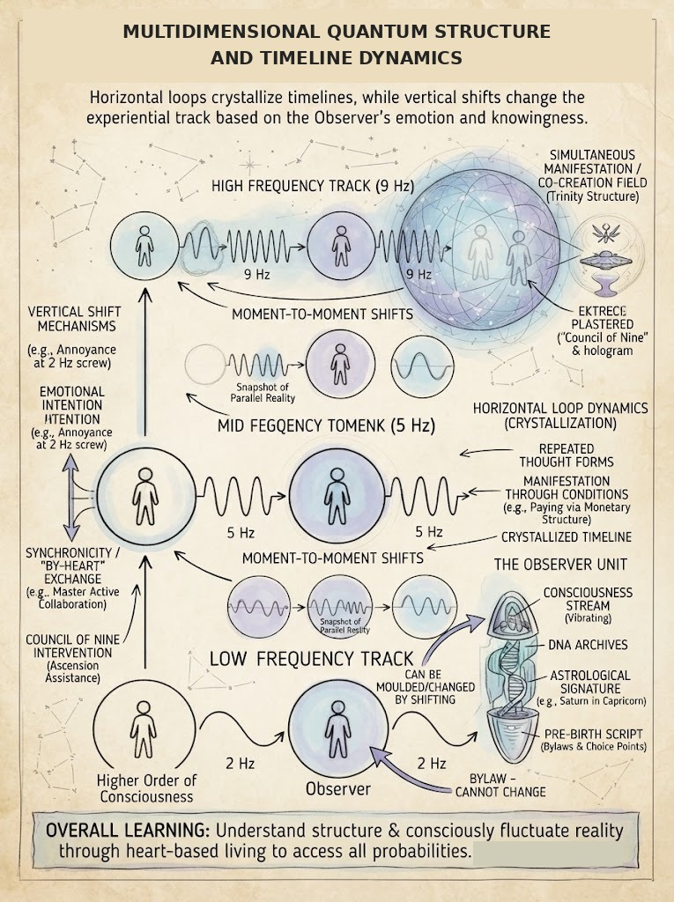
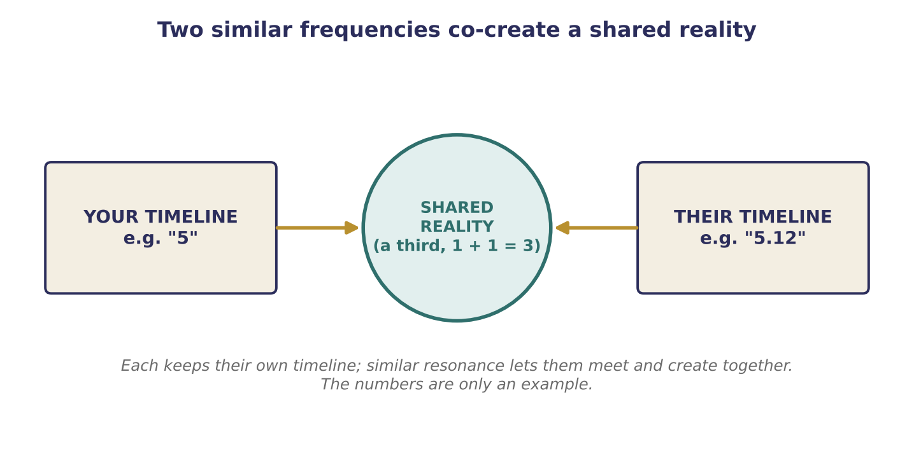
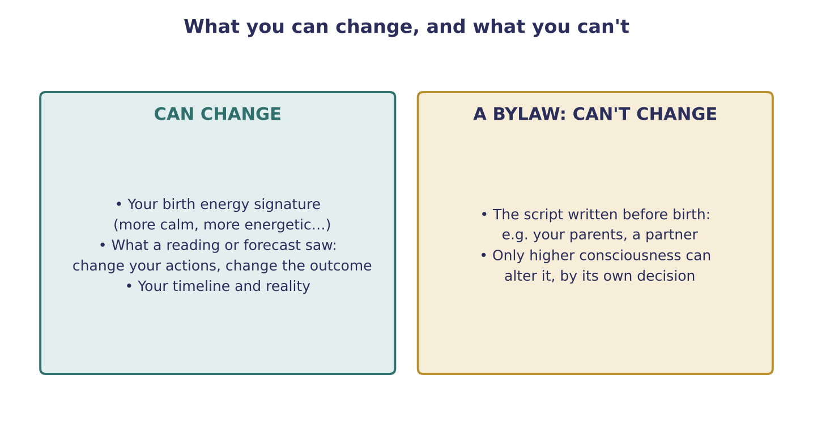

Q & A: Synchronicity and Instant Manifestation
How heart-based giving makes things simply appear, co-creating with people of similar frequency, and what can and can't be changed (live Q&A)

Key teachings
10.1Synchronicity: when the platform comes to you
The teaching example is an invitation to teach that arrived step by step through guidance. The instruction was to go and stay quiet, sharing only when asked. The group had already been told, through its own channel, that "a new teacher is coming." The venue itself had been given away from the heart and turned into a non-profit.
The lesson: you don't need to set conditions or pay your way into a platform. When you live through the heart, the right people and places find you through synchronicity. That is Energy Philanthropy at work (see 5.1). It also shows the value of listening to guidance, even when it seems odd (see 6.9).
10.2Instant manifestation
A missing screw was simply back in place days later, without a trip to the shop. You are constantly shifting and manifesting; you can shift straight into a parallel reality where the thing is already there, without the in-between steps (see 3.5, 8.4). The more you learn the structure, the more often this happens.
A flash of annoyance ("I want it now") isn't a problem: it acts as a code for immediate manifestation, so it's fine sometimes.
What makes instant manifestation easy is exchange through the heart, in every part of life. Being paid is fine; you can even be a millionaire that way. But each payment says "to receive what you want in my hologram, you must give me this", a condition. Do only that, and you crystallize a condition-only timeline (see 4.2). Help people freely, expecting nothing back, and you open infinite probabilities: you think of something, turn round, and it's there.
10.3Your frequency, your purpose, and co-creation
Your current frequency is always fluctuating (see Section 3). Your purpose unfolds as you keep steering your emotion toward the positive, whatever arrives, remembering you're in a hologram you can switch. Don't question how it will come.
You find a teacher or a group because you resonate at a similar frequency. Picture two timelines, one at "5" and one at "5.12": different realities, yet close enough to merge into a shared plasma, a third reality (see 2.2). Each of you keeps your own timeline, while together you co-create. That is why everyone has their own reality and can still create with others.

10.4When it gets complicated, study again
If the material starts to feel too complex to absorb, go back to the beginning and study it again. Each time more sinks in, and you notice what you missed before. Everyone learns this way, step by step, including the teacher, who studied something every day (see 5.2).
10.5Astrology, readings and bylaws
At the moment of your birth, a particular energy signature was set in you, which is why some people are calmer and some more energetic. A chart or reading can describe that. But with ascension, everything is fluctuating, so don't get caught up in it: once you know it, you can mould it, becoming more assertive, more observant, whatever you need.
The same goes for any reading or prediction: it shows the timeline you're on now. Act differently tomorrow and the outcome can change. The only thing you can't change is a bylaw, the script written before you were born, such as who your parents are or a particular partner. Only higher consciousness can alter that, by its own decision (see 5.7, 6.5).

The method — Open the Door to Instant Manifestation
- Give through the heart wherever you can, with no conditions and nothing expected back.
- Notice what's missing without panic. A quick "I want it now" is fine.
- Recall it and know it is already there, in a reality you can shift into (see 8.4).
- Don't question how it will come.
- Notice synchronicities, the people and places that find you, and follow them with an open heart.
- Keep studying; each time you go back, more sinks in.